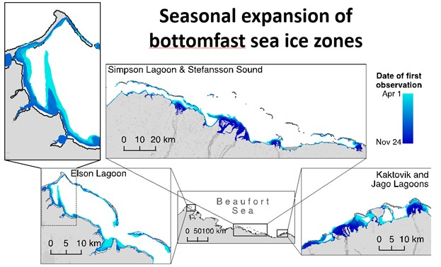
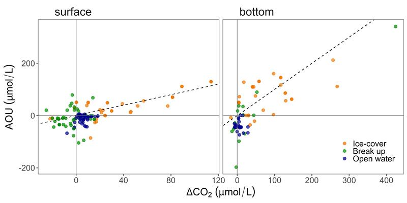
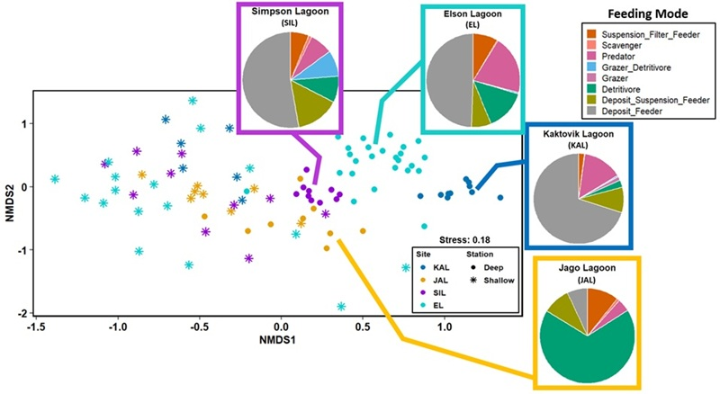

Signature Data
Signature datasets of BLE LTER illustrate ecological processes and patterns that occur in Beaufort Lagoon Ecosystems. These datasets are significant for understanding the dynamics of the ecosystem and are often used in publications and research.
Click on the dataset names below to view more details, including descriptions, plots, and links to the data.
Dataset Description

Publications
Dataset Description
Comparison of AOU and CO2 indicate that the relative influence of biological processes, ocean-atmosphere exchange, and inputs from other factors such as melting ice and terrestrial inflow in BLE lagoons metabolism vary over time and space.
When points lie along the 1:1 line, the pattern is likely attributed to biological processes, linking the consumption or production of CO2 and O2 (e.g., photosynthesis, respiration). Notably, during ice cover, strong positive coupling of CO2 saturation with AOU, in addition to high pCO2 and AOU (top right quadrant), point to net heterotrophy in the lagoons.
Conversely, during ice breakup, biological uptake from primary production and phytoplankton blooms led to pCO2 undersaturation and low AOU. However, positive AOU during this season suggests that alkaline sea ice melt, rather than metabolic activity, may sometimes drive CO2 sink capacity.
Finally, during open water, there was likely a strong influence of ocean-atmosphere exchange on pCO2, indicated by weak relationships between pCO2 and AOU. Inputs from rivers may have led to net heterotrophy and CO2 efflux, while interaction with marine inflows may lead to opposing conditions.

Figure. Scatterplot of apparent oxygen utilization (AOU; Saturated - Observed O2 concentrations) versus airsea CO2 gradient (∆CO2; in situ CO2 - atmospheric CO2) in (a) surface and (b) bottom waters, with dashed 1:1 lines (From Spera & Lougheed, 2025).
Data Link
Spot and continuous seasonal pCO2 sensor measurements from lagoon and river sites along the Alaska Beaufort Sea coast — knb-lter-ble.20.1 on EDI
Publications
Dataset Description
The benthic infauna communities of the Beaufort Sea coastal lagoons are influenced by two main factors: depth and the organic carbon concentrations of the sediment. The shallow (less than 2m) infauna assemblages across all four lagoons have similar structure and experience a complete freezing of the water column and sediment every winter. Deeper (greater than 2m) areas of these lagoons support higher diversity and spatially distinct infauna assemblages due to a lack of freezing stress and higher sediment organic carbon concentrations. The soft, muddy-bottom habitats of all four lagoons support communities mostly dominated by deposit-feeding invertebrates and detritivores.

Figure. Infauna nmds and pie feeding mode
Data Link
Species richness and abundance of benthic infauna found in lagoons along the Beaufort Sea Coast knb-lter-ble.25.3 on EDI
Sediment pigment concentrations from lagoon sites along the Alaska Beaufort Sea coast knb-lter-ble.12.5 on EDI
Carbon and nitrogen content and stable isotope composition from sediment organic matter from lagoon sites along the Alaska Beaufort Sea coast knb-lter-ble.18.8 on EDI
Publications
Temperature, Salinity and Depth Year Comparison
Use the dropdowns to compare temperature, salinity, or depth across years. Colored background bands show under ice, breakup, and open-water seasons.